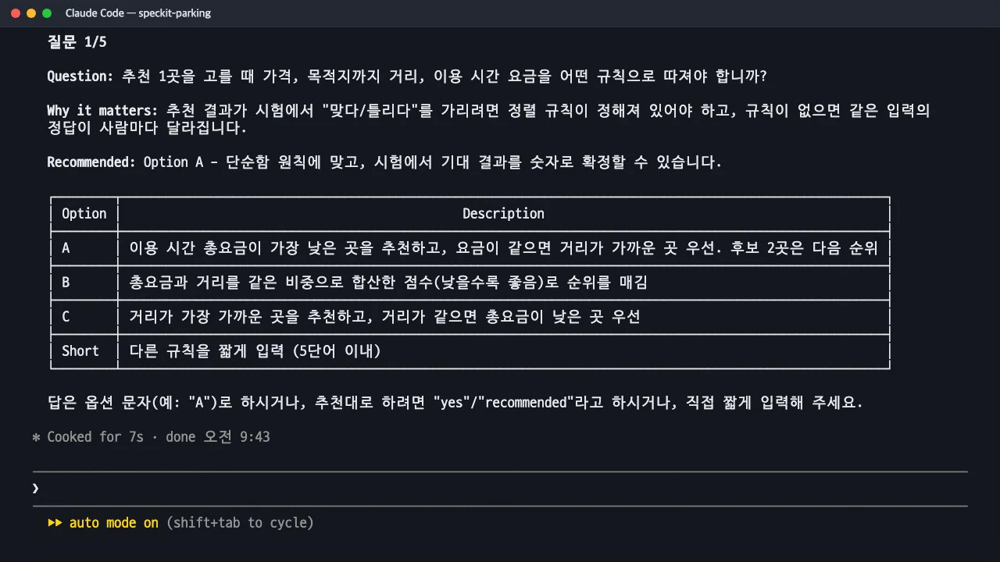
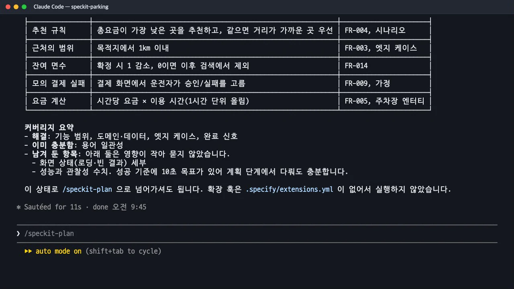

/speckit-clarify는 사양을 열 가지 범주로 훑어 범주마다 「분명함·일부·빠짐」으로 평가하고, 영향과 불확실성이 큰 순서로 최대 다섯 개를 하나씩 묻습니다. 그 기준이 무엇인지, 질문이 어떤 형식으로 나오는지, 답이 사양의 어디에 들어가는지 실제 질문 다섯 개로 확인합니다.
이 장의 산출물 · GitHub
이 장이 끝났을 때의 파일이 공개 저장소 uengine-oss/tutorial-speckit-handson의 태그 step-05-clarify에 있습니다. 본문의 파일 이름을 눌러도 해당 파일이 열립니다.
무엇을 · 왜#
명세 단계는 "합리적인 기본값이 있으면 추측하라"는 지시를 받습니다. 그래서 질문 없이 끝나기 쉽습니다. 명확화는 반대로 접근합니다. 이미 쓴 사양을 정해진 범주에 하나씩 대조하고, 답에 따라 설계나 시험이 달라지는 빈 부분만 골라 사람에게 묻습니다.
Spec Kit은 명확화를 계획(/speckit-plan) 전에 끝내라고 합니다. 건너뛰면 "뒤에서 다시 고칠 위험이 커진다"고 경고만 하고 넘어갑니다.
모호함을 재는 열 가지 범주#
명확화 스킬(.claude/skills/speckit-clarify/SKILL.md)에 적힌 범주를 그대로 옮겼습니다. 범주마다 상태를 Clear(분명함) · Partial(일부만) · Missing(빠짐)으로 분류한 내부 현황표를 만듭니다.
| 범주 | 들여다보는 것 |
|---|---|
| 기능 범위와 동작 | 핵심 목표와 성공 기준, 범위 밖이라고 밝힌 것, 사용자 역할 구분 |
| 도메인과 데이터 모델 | 엔터티·속성·관계, 식별자와 유일성 규칙, 상태 변화(수명주기), 데이터 규모 가정 |
| 상호작용과 화면 흐름 | 핵심 사용자 여정, 오류·빈 결과·로딩 상태, 접근성·현지화 |
| 비기능 품질 | 성능(지연·처리량), 확장성, 신뢰성·가용성, 관찰성(로그·지표), 보안·개인정보, 규제 |
| 연동과 외부 의존 | 외부 서비스와 그 실패 방식, 데이터 입출력 형식, 프로토콜·버전 가정 |
| 엣지 케이스와 실패 처리 | 부정 시나리오, 요청 제한, 충돌 해결(동시 수정 등) |
| 제약과 절충 | 기술 제약(언어·저장소·호스팅), 명시한 절충안과 제외한 대안 |
| 용어와 일관성 | 표준 용어집, 쓰지 않기로 한 동의어 |
| 완료 신호 | 인수 기준을 시험할 수 있는지, 측정할 수 있는 완료 기준 |
| 기타·자리표시 | TODO와 미결정, 수치 없는 형용사("빠른", "직관적인", "견고한") |
무엇을 묻고 무엇을 묻지 않나#
일부(Partial)나 빠짐(Missing)인 범주마다 질문 후보를 만들고, 다음 규칙으로 걸러 최대 5개만 남깁니다.
- 묻는 것: 답에 따라 아키텍처, 데이터 모델, 작업 나누기, 시험 설계, 화면 동작, 운영 준비, 규제 검증이 실제로 달라지는 것.
- 묻지 않는 것: 이미 답이 있는 것, 취향 문제, 계획 단계에서 정할 실행 세부, 기술 스택 비교(그것이 기능 자체를 가로막지 않는 한).
- 고르는 순서: 미해결 범주가 5개를 넘으면 영향 × 불확실성이 큰 순서. 덜 중요한 질문 두 개보다 중요한 질문 하나(예: 보안)를 먼저.
질문은 한 번에 하나씩 나오고, 다음 질문을 미리 보여 주지 않습니다. 형식도 정해져 있습니다.
| 부분 | 내용 |
|---|---|
| Question | 물음표로 끝나는 온전한 질문. 요구사항 번호나 주제 이름만 제시하는 것은 금지 |
| Why it matters | 이 답이 인수나 출시에 왜 중요한지 한 문장 |
| Recommended / Suggested | 추천하는 답과 이유. 선택지형이면 Recommended, 단답형이면 Suggested |
| 선택지 표 | 서로 겹치지 않는 2~5개 선택지, 필요하면 「Short: 5단어 이내 직접 입력」 |
답은 선택지 문자(A), 추천을 받아들이는 yes, 또는 5단어 이내의 직접 입력으로 합니다. done·stop이라고 하면 거기서 멈춥니다.
따라 하기#
- 인자 없이 실행합니다.
/speckit-clarify만 입력하면 사양 전체를 훑습니다. 특정 부분만 다시 보고 싶으면 뒤에 영역을 적습니다(7장에서 그렇게 씁니다). - 다섯 질문에 답합니다. 이 실습에서는 추천 답을 네 번 받아들이고, 한 번은 직접 답했습니다.
| # | 질문 | 답 |
|---|---|---|
| 1 | 추천 1곳을 고를 때 가격·거리·요금을 어떤 규칙으로 따지는가? | A: 총요금이 가장 낮은 곳, 같으면 가까운 곳 |
| 2 | 「목적지 근처」는 몇 m 안까지인가? | yes(추천 B): 1km 이내 |
| 3 | 예약이 확정되면 잔여 면수를 줄이는가? | A: 1 줄이고, 0이면 검색에서 제외 |
| 4 | 모의 결제는 어떤 조건에서 실패하는가? | 직접 입력: 결제 화면에서 실패를 고르면 (제안은 「특정 카드번호로 실패」였음) |
| 5 | 「2시간 주차」 요금은 어떻게 계산하는가? | A: 시간당 요금 × 이용 시간, 1시간 단위 올림 |
질문마다 "Why it matters"가 붙어 왜 지금 정해야 하는지 알려 줍니다. 예를 들어 1번은 "규칙이 없으면 같은 입력의 정답이 사람마다 달라져 시험에서 맞다·틀리다를 가릴 수 없다"였습니다.

명확화의 첫 질문: Question, Why it matters, Recommended, 선택지 표 - 완료 보고를 읽습니다. 몇 개를 물었는지, 어느 절을 고쳤는지, 품질 점검표가 어떻게 바뀌었는지, 범주별로 무엇이 남았는지 정리해 줍니다.

명확화 완료 보고: 결정 표와 커버리지 요약
산출물: 답이 사양에 들어가는 자리#
답 하나를 받을 때마다 spec.md를 바로 저장합니다. 먼저 ## Clarifications 아래 오늘 날짜 세션에 문답 한 줄을 남깁니다.
## Clarifications
### Session 2026-11-13
- Q: "목적지 근처"는 목적지에서 얼마 안의 주차장까지 후보로 보는가? → A: 목적지에서 1km 이내.
- Q: 모의 결제는 어떤 조건에서 실패하는가? → A: 모의 결제 화면에서 운전자가 "실패"를 고르면 실패한다("승인"을 고르면 승인).
그다음 답의 종류에 맞는 절을 고칩니다. 규칙은 스킬에 이렇게 정해져 있습니다.
| 답의 종류 | 고치는 곳 | 이 실습에서 |
|---|---|---|
| 기능의 모호함 | 기능 요구사항 | FR-003에 「1km 이내」, FR-004에 추천 규칙 |
| 데이터 모양 | 핵심 엔터티 | 주차장에 「시간당 요금」 |
| 비기능 제약 | 성공 기준(측정 가능한 수치로) | 이번에는 해당 없음 |
| 엣지 케이스 | 엣지 케이스 | 「1km 이내에 후보가 없으면 없다는 안내」 |
| 용어 충돌 | 문서 전체에서 용어 통일 | 이번에는 해당 없음 |
새 요구사항이 생기면 번호가 밀립니다. 이 실습에서는 요금 계산 규칙이 새 FR-005가 되어 기능 요구사항이 14개에서 16개로 늘었습니다. 앞서 쓴 내용과 모순되는 문장은 덧붙이지 않고 바꿔 씁니다. 예를 들어 "결제는 시험을 위해 성공·실패를 결정할 수 있다"던 가정은 「결제 화면에서 운전자가 고른다」로 바뀌었습니다.
범주별 결과(커버리지 요약)#
완료 보고의 마지막 표는 범주마다 네 가지 중 하나로 상태를 적습니다.
| 상태 | 뜻 | 이 실습 |
|---|---|---|
| Resolved (해결) | 일부·빠짐이었고 이번 질문으로 채움 | 기능 범위, 도메인·데이터, 엣지 케이스, 완료 신호 |
| Clear (이미 분명) | 처음부터 충분 | 용어 일관성 |
| Deferred (미룸) · Outstanding (남음) | 질문 수 한도나 계획 단계로 미룬 것 · 아직 일부·빠짐이지만 영향이 작은 것 | 화면에는 둘을 나누지 않고 「남겨 둔 항목, 영향이 작아 묻지 않음」으로 함께 보여 줬습니다. 화면 상태(로딩·빈 결과) 세부, 성능과 관찰성 수치(성공 기준에 10초 목표가 있어 계획 단계에서 다뤄도 충분) |
미룸이나 남음이 있으면 바로 계획으로 갈지, 계획 뒤에 명확화를 한 번 더 실행할지 권고합니다. 이 실습에서는 "이 상태로 계획으로 넘어가도 된다"는 권고를 받았습니다.
직접 답할 때는 짧게, 하지만 구체적으로
4번 질문의 제안은 「특정 카드번호로 실패」였습니다. 시연할 때 화면에서 확인하려고 「결제 화면에서 실패를 고르면」으로 직접 답했고, 이 답은 FR-009와 가정에 들어가 결국 화면에 「승인」·「실패」 단추로 구현됩니다. 직접 입력하는 답은 5단어 이내로 제한되므로, 길게 설명해야 하는 결정이라면 명확화가 끝난 뒤 사양을 직접 고치거나 /speckit-specify로 다시 쓰는 편이 낫습니다.
확인 문제#
명확화는 왜 「어떤 프레임워크를 쓸까요?」 같은 질문을 하지 않나요?
기술 스택 비교와 구현 방법은 계획 단계의 몫이라 질문 후보에서 뺍니다. 명확화는 답에 따라 사양(무엇을, 왜)과 인수 시험이 달라지는 빈 부분만 묻습니다. 기술 선택이 없으면 기능 자체를 정할 수 없는 예외적인 경우에만 묻습니다.
미해결 범주가 일곱 개인데 질문은 다섯 개뿐이라면 무엇부터 묻나요?
영향 × 불확실성이 큰 순서로 다섯 개를 고릅니다. 같은 범주의 덜 중요한 질문 두 개보다, 아직 다루지 않은 중요한 범주(예: 보안) 하나를 먼저 묻도록 범주 간 균형도 고려합니다. 묻지 못한 중요한 범주는 완료 보고에 Deferred로 이유와 함께 남습니다.
답이 앞서 쓴 사양 문장과 모순되면 어떻게 되나요?
모순되는 기존 문장을 지우고 새 답으로 바꿔 씁니다. 같은 내용을 두 번 적거나 모순을 남기지 않는 것이 명확화의 검증 항목입니다. 용어가 바뀌면 문서 전체에서 새 용어로 통일하고, 꼭 필요할 때만 「(이전 이름 "X")」를 한 번 남깁니다.